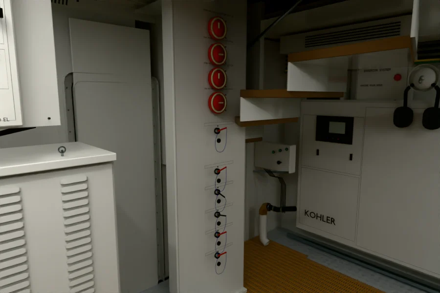
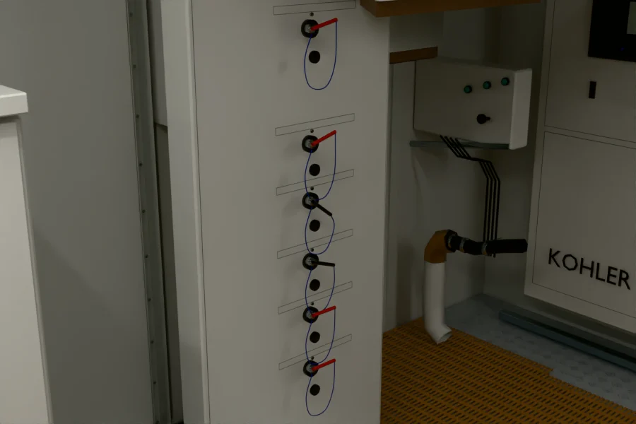

Carcasas antiguas retranqueadas, recorte local del peldaño 8 y barandilla continua al lado opuesto. Los mandos conservan sus posiciones; motores y navegación se mantienen. Cuatro atlas HDR y tres reflejos rehechos.
10 mandos · 0 píxeles bloqueados en máscaras interiores · 12297 rayos sin interferencias · 116.272 triángulos · 1.32 MiB residentes adicionales estimados respecto de R02.
Profundidad e identificadores
Verde: frente eléctrico. Azul: acceso reconstruido. Rojo: contexto. Las pruebas CPU y WebGL incluyen las superficies que podrían ocultar los mandos.
64 muestras, Neutral, exposición 0,05, sRGB; la misma estación y proyección de las vistas del navegador.


Alcance y pendientes
La visita aporta una referencia de un Grande 36M; no confirma por sí sola la identidad de Luz de Mar ni medidas reales.
La aceptación R03 cubre la eliminación de interferencias ante los diez mandos y sus rótulos; no certifica la semejanza completa del cuarto.
Los mandos pequeños mantienen perfiles de llave, caída de cables y placas simplificados respecto de la VR. Esta corrección conserva esas piezas.
Tres piezas pequeñas cierran los apoyos del pasamanos y su terminal. Son ajustes digitales inferidos; no se identifican como herrajes observados en la VR.
Los textos pequeños, su alineación, el KOHLER, los equipos superiores y los acabados del aislamiento siguen pendientes.
La cuadrícula de 8/4 px mide todas las celdas del alcance. Generar o medir una celda no equivale a aprobar visualmente cada detalle.
La VR aporta una sola estación física. Las dos posiciones laterales comprueban visibilidad; no son referencias fotográficas adicionales.
El peldaño conserva su altura y una zona de apoyo digital de 30 × 23 cm; la barandilla continua pasa al lado opuesto por elección explícita. No son medidas certificadas del barco.
SwiftShader verifica corrección y recursos estimados. Sus tiempos no acreditan FPS en una GPU real.
Los reflejos locales son estáticos y aproximados durante el corte nominal.
Las fotografías VR y las hojas VR/R02/R03 de cuadros de 4 px se conservan privadas. Las imágenes publicadas son renders propios. El documento de estrategia y los 629 archivos del yate original se verifican sin cambios.